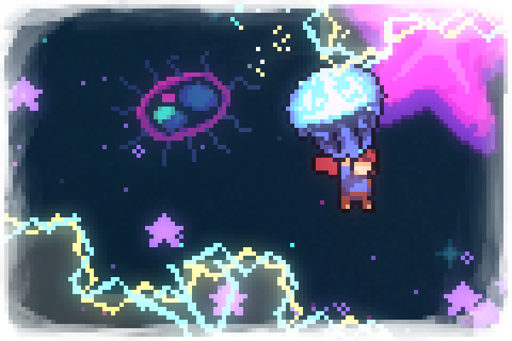

Na fase Farewell de Celeste, Madeline retorna à montanha após descobrir que a vó pássaro morreu. Abalada pela perda, ela atravessa cenários surreais e emocionalmente intensos enquanto tenta lidar com o luto e entender seus próprios sentimentos sobre despedidas e mudanças.
Ao longo da jornada, Madeline aprende a aceitar que algumas perdas fazem parte da vida e que seguir em frente não significa esquecer alguém importante. O capítulo aprofunda o amadurecimento emocional da protagonista e encerra sua história com uma mensagem sobre aceitação, mudança e crescimento pessoal.
